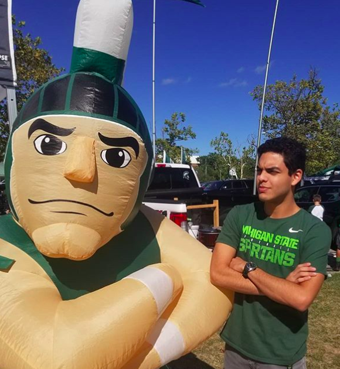
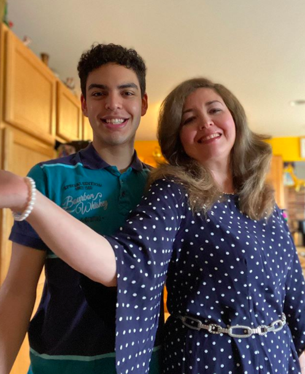

{kind=link}
Kroger
June 2017 - March 2018
Worked as a courtesy clerk bagging products and pushing carts before being promoted to the produce department where I was responsible for maintaining fresh goods.
(248) 779-6470, 10951 Highland Rd, White Lake
{kind=link}
Culvers
March 2018 - May 2018
Worked the cash register, took custard orders and functioned the drive through while maintaining exceptional customer service.
(248) 922-9224, 6910 Sashabaw Rd, Village of Clarkston
{kind=link}
Qdoba
May 2019 - August 2019
Took orders and produced customers' food in front of them in an efficient manner while providing excellent customer service. Worked well with others and independently.
(248) 922-5629, 6461 Dixie Hwy, Village of Clarkston
{kind=link}
Michigan State University
January 2019 -
{kind=link}
JC Penney
June 2018 - August 2018
Equipped with a lot of responsability, I overlooked the men's department where I helped customers pick out the right sets of clothing. I was also capable of working the cash register.
(248) 779-6070, 300 Town Center Blvd, White Lake
{kind=link}
Walmart
August 2018 - December 2018
As a CAP-2 team member I was responsible for stocking dry goods, breaking the truck when my shift started and distributing products across the store.
(248) 698-9601, 9190 Highland Rd, White Lake